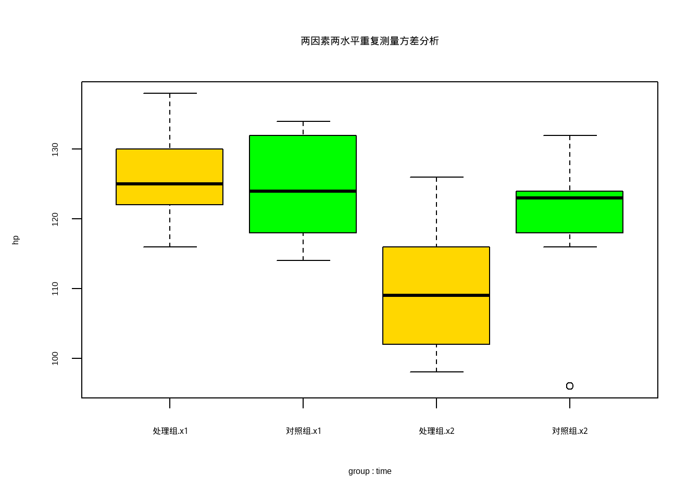
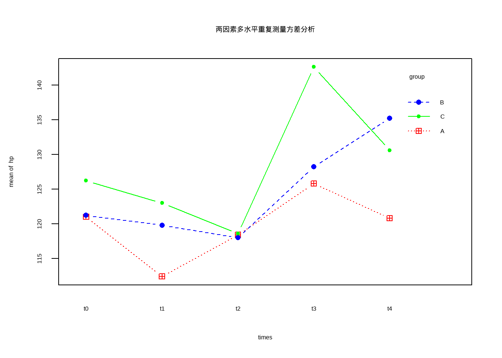
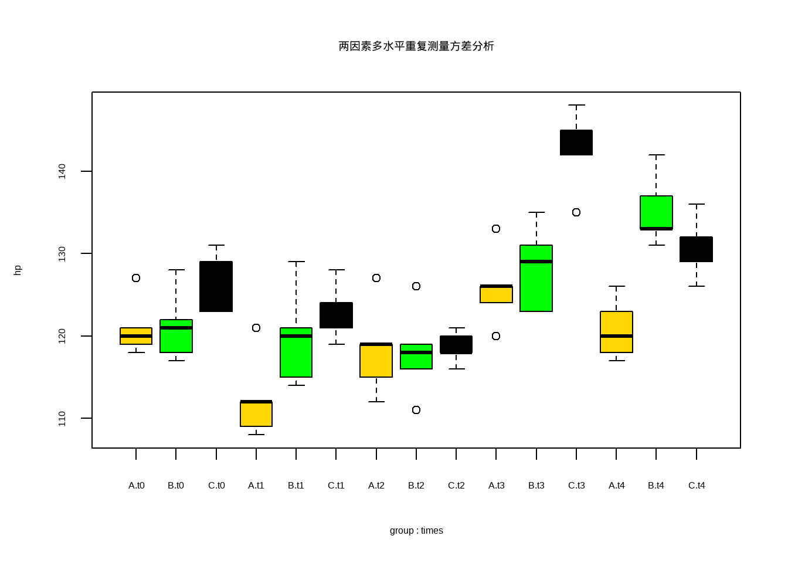

df12_1 <- foreign::read.spss("datasets/12-1.sav", to.data.frame = T)
str(df12_1)
## 'data.frame': 20 obs. of 5 variables:
## $ n : num 1 2 3 4 5 6 7 8 9 10 ...
## $ x1 : num 130 124 136 128 122 118 116 138 126 124 ...
## $ x2 : num 114 110 126 116 102 100 98 122 108 106 ...
## $ group: Factor w/ 2 levels "处理组","对照组": 1 1 1 1 1 1 1 1 1 1 ...
## $ d : num 16 14 10 12 20 18 18 16 18 18 ...
## - attr(*, "variable.labels")= Named chr [1:5] "编号" "治疗前血压" "治疗后血压" "组别" ...
## ..- attr(*, "names")= chr [1:5] "n" "x1" "x2" "group" ...
## - attr(*, "codepage")= int 936
head(df12_1)
## n x1 x2 group d
## 1 1 130 114 处理组 16
## 2 2 124 110 处理组 14
## 3 3 136 126 处理组 10
## 4 4 128 116 处理组 12
## 5 5 122 102 处理组 20
## 6 6 118 100 处理组 1816 重复测量方差分析
16.1 两因素两水平
使用课本例12-1的数据，直接读取：
数据一共5列（第5列是自己算出来的，其实原始数据只有4列），第1列是编号，第2列是治疗前血压，第3例是治疗后血压，第4列是分组，第5列是血压前后差值。
进行重复测量数据两因素两水平的方差分析前，先把数据转换一下格式：
library(tidyverse)
# 变成长数据
df12_11 <-
df12_1[,1:4] %>%
pivot_longer(cols = 2:3,names_to = "time",values_to = "hp") %>%
mutate_if(is.character, as.factor)
df12_11$n <- factor(df12_11$n)
str(df12_11)
## tibble [40 × 4] (S3: tbl_df/tbl/data.frame)
## $ n : Factor w/ 20 levels "1","2","3","4",..: 1 1 2 2 3 3 4 4 5 5 ...
## $ group: Factor w/ 2 levels "处理组","对照组": 1 1 1 1 1 1 1 1 1 1 ...
## $ time : Factor w/ 2 levels "x1","x2": 1 2 1 2 1 2 1 2 1 2 ...
## $ hp : num [1:40] 130 114 124 110 136 126 128 116 122 102 ...
head(df12_11)
## # A tibble: 6 × 4
## n group time hp
## <fct> <fct> <fct> <dbl>
## 1 1 处理组 x1 130
## 2 1 处理组 x2 114
## 3 2 处理组 x1 124
## 4 2 处理组 x2 110
## 5 3 处理组 x1 136
## 6 3 处理组 x2 126转换后的数据格式如上。
进行重复测量数据两因素两水平的方差分析:
hp是因变量，time是测量时间（治疗前和治疗后各测量一次），group是分组因素（两种治疗方法），n是受试者编号。
# time和group是有交叉的，每个受试者（n）只和time有交叉，和group没有交叉
f1 <- aov(hp ~ time * group + Error(n/time), data = df12_11)
summary(f1)
##
## Error: n
## Df Sum Sq Mean Sq F value Pr(>F)
## group 1 202.5 202.5 1.574 0.226
## Residuals 18 2315.4 128.6
##
## Error: n:time
## Df Sum Sq Mean Sq F value Pr(>F)
## time 1 1020.1 1020.1 55.01 7.08e-07 ***
## time:group 1 348.1 348.1 18.77 0.000401 ***
## Residuals 18 333.8 18.5
## ---
## Signif. codes: 0 '***' 0.001 '**' 0.01 '*' 0.05 '.' 0.1 ' ' 1结果输出了两张表，第二个是测量前后比较与交互作用的方差分析表，第一个是处理组与对照组比较的方差分析表，可以看到结果和课本是一样的！
用图形方式展示重复测量的结果：
with(df12_11,
interaction.plot(time, group, hp, type = "b", col = c("red","blue"),
pch = c(12,16), main = "两因素两水平重复测量方差分析"))
或者用箱线图展示结果：
boxplot(hp ~ group*time, data = df12_11, col = c("gold","green"),
main = "两因素两水平重复测量方差分析")
16.2 两因素多水平的分析
使用课本例12-3的数据，直接读取：
df12_3 <- foreign::read.spss("datasets/例12-03.sav",to.data.frame = T,
reencode = "utf-8"
)
str(df12_3)
## 'data.frame': 15 obs. of 7 variables:
## $ No : num 1 2 3 4 5 6 7 8 9 10 ...
## $ group: Factor w/ 3 levels "A","B","C": 1 1 1 1 1 2 2 2 2 2 ...
## $ t0 : num 120 118 119 121 127 121 122 128 117 118 ...
## $ t1 : num 108 109 112 112 121 120 121 129 115 114 ...
## $ t2 : num 112 115 119 119 127 118 119 126 111 116 ...
## $ t3 : num 120 126 124 126 133 131 129 135 123 123 ...
## $ t4 : num 117 123 118 120 126 137 133 142 131 133 ...
## - attr(*, "variable.labels")= Named chr [1:7] "...." "...." "" "" ...
## ..- attr(*, "names")= chr [1:7] "No" "group" "t0" "t1" ...
head(df12_3)
## No group t0 t1 t2 t3 t4
## 1 1 A 120 108 112 120 117
## 2 2 A 118 109 115 126 123
## 3 3 A 119 112 119 124 118
## 4 4 A 121 112 119 126 120
## 5 5 A 127 121 127 133 126
## 6 6 B 121 120 118 131 137数据一共7列，第1列是患者编号，第2列是诱导方法（3种），第3-7列是5个时间点的血压。
首先转换数据格式：
library(tidyverse)
# 变为长数据
df12_31 <- df12_3 %>%
pivot_longer(cols = 3:7, names_to = "times", values_to = "hp")
df12_31$No <- factor(df12_31$No)
df12_31$times <- factor(df12_31$times)
str(df12_31)
## tibble [75 × 4] (S3: tbl_df/tbl/data.frame)
## $ No : Factor w/ 15 levels "1","2","3","4",..: 1 1 1 1 1 2 2 2 2 2 ...
## $ group: Factor w/ 3 levels "A","B","C": 1 1 1 1 1 1 1 1 1 1 ...
## $ times: Factor w/ 5 levels "t0","t1","t2",..: 1 2 3 4 5 1 2 3 4 5 ...
## $ hp : num [1:75] 120 108 112 120 117 118 109 115 126 123 ...转换后的格式见上图。
进行方差分析（和两因素两水平没有任何区别）：
f2 <- aov(hp ~ times * group + Error(No/(times)), data = df12_31)
summary(f2)
##
## Error: No
## Df Sum Sq Mean Sq F value Pr(>F)
## group 2 912.2 456.1 5.783 0.0174 *
## Residuals 12 946.5 78.9
## ---
## Signif. codes: 0 '***' 0.001 '**' 0.01 '*' 0.05 '.' 0.1 ' ' 1
##
## Error: No:times
## Df Sum Sq Mean Sq F value Pr(>F)
## times 4 2336.5 584.1 106.6 < 2e-16 ***
## times:group 8 837.6 104.7 19.1 1.62e-12 ***
## Residuals 48 263.1 5.5
## ---
## Signif. codes: 0 '***' 0.001 '**' 0.01 '*' 0.05 '.' 0.1 ' ' 1输出结果是两张表格，第1个是不同诱导方法患者血压比较的方差分析表，第2个是麻醉诱导时相及其与诱导方法交互作用的方差分析表。
结果和课本是一样的！具体意义解读请认真学习医学统计学相关知识。
用图形方式展示重复测量的结果：
with(df12_31,
interaction.plot(times, group, hp, type = "b",
col = c("red","blue","green"),
pch = c(12,16,20),
main = "两因素多水平重复测量方差分析"))
或者用箱线图展示结果：
boxplot(hp ~ group*times, data = df12_31, col = c("gold","green","black"),
main = "两因素多水平重复测量方差分析")
16.3 多重比较
使用课本例12-1的数据，直接读取：
df12_3 <- foreign::read.spss("datasets/例12-03.sav",to.data.frame = T)
str(df12_3)
## 'data.frame': 15 obs. of 7 variables:
## $ No : num 1 2 3 4 5 6 7 8 9 10 ...
## $ group: Factor w/ 3 levels "A","B","C": 1 1 1 1 1 2 2 2 2 2 ...
## $ t0 : num 120 118 119 121 127 121 122 128 117 118 ...
## $ t1 : num 108 109 112 112 121 120 121 129 115 114 ...
## $ t2 : num 112 115 119 119 127 118 119 126 111 116 ...
## $ t3 : num 120 126 124 126 133 131 129 135 123 123 ...
## $ t4 : num 117 123 118 120 126 137 133 142 131 133 ...
## - attr(*, "variable.labels")= Named chr [1:7] "\xd0\xf2\xba\xc5" "\xd7\xe9\xb1\xf0" "" "" ...
## ..- attr(*, "names")= chr [1:7] "No" "group" "t0" "t1" ...数据一共7列，第1列是患者编号，第2列是诱导方法（3种），第3-7列是5个时间点的血压。
首先转换数据格式：
library(reshape2) # 换个R包用用
df.l <- melt(df12_3, id.vars = c("No","group"),
variable.name = "times",
value.name = "hp")
df.l$No <- factor(df.l$No)
str(df.l)
## 'data.frame': 75 obs. of 4 variables:
## $ No : Factor w/ 15 levels "1","2","3","4",..: 1 2 3 4 5 6 7 8 9 10 ...
## $ group: Factor w/ 3 levels "A","B","C": 1 1 1 1 1 2 2 2 2 2 ...
## $ times: Factor w/ 5 levels "t0","t1","t2",..: 1 1 1 1 1 1 1 1 1 1 ...
## $ hp : num 120 118 119 121 127 121 122 128 117 118 ...
head(df.l)
## No group times hp
## 1 1 A t0 120
## 2 2 A t0 118
## 3 3 A t0 119
## 4 4 A t0 121
## 5 5 A t0 127
## 6 6 B t0 121进行重复测量方差分析，默认方法不能输出球形检验的结果，所以我更推荐rstatix提供的方法：
# 默认
f <- aov(hp ~ group*times + Error(No/times), data = df.l)
summary(f)
##
## Error: No
## Df Sum Sq Mean Sq F value Pr(>F)
## group 2 912.2 456.1 5.783 0.0174 *
## Residuals 12 946.5 78.9
## ---
## Signif. codes: 0 '***' 0.001 '**' 0.01 '*' 0.05 '.' 0.1 ' ' 1
##
## Error: No:times
## Df Sum Sq Mean Sq F value Pr(>F)
## times 4 2336.5 584.1 106.6 < 2e-16 ***
## group:times 8 837.6 104.7 19.1 1.62e-12 ***
## Residuals 48 263.1 5.5
## ---
## Signif. codes: 0 '***' 0.001 '**' 0.01 '*' 0.05 '.' 0.1 ' ' 1# rstatix
library(rstatix)
anova_test(data = df.l,
dv = hp,
wid = No,
within = times,
between = group
)
## ANOVA Table (type II tests)
##
## $ANOVA
## Effect DFn DFd F p p<.05 ges
## 1 group 2 12 5.783 1.70e-02 * 0.430
## 2 times 4 48 106.558 3.02e-23 * 0.659
## 3 group:times 8 48 19.101 1.62e-12 * 0.409
##
## $`Mauchly's Test for Sphericity`
## Effect W p p<.05
## 1 times 0.293 0.178
## 2 group:times 0.293 0.178
##
## $`Sphericity Corrections`
## Effect GGe DF[GG] p[GG] p[GG]<.05 HFe DF[HF] p[HF]
## 1 times 0.679 2.71, 32.58 1.87e-16 * 0.896 3.59, 43.03 4.65e-21
## 2 group:times 0.679 5.43, 32.58 4.26e-09 * 0.896 7.17, 43.03 2.04e-11
## p[HF]<.05
## 1 *
## 2 *画图展示：
library(ggplot2)
library(dplyr)
df.l |>
group_by(times,group) |>
summarise(mm=mean(hp)) |>
ungroup() |>
ggplot(aes(times,mm))+
geom_line(aes(group=group,color=group),linewidth=1.2)+
theme_bw()
接下来是重复测量数据的多重比较，课本中分成了3个方面。
16.3.1 组间差别多重比较
首先也计算下各组的均值，和课本对比下（一样的）：
df.l |>
group_by(group) |>
summarise(mm=mean(hp))
## # A tibble: 3 × 2
## group mm
## <fct> <dbl>
## 1 A 120.
## 2 B 124.
## 3 C 128.LSD/SNK/Tukey/Dunnett/Bonferroni等方法都可以，和多个均数比较的多重检验一样。
library(PMCMRplus)
summary(lsdTest(hp ~ group, data = df.l))
## t value Pr(>|t|)
## B - A == 0 2.175 0.0329218 *
## C - A == 0 3.860 0.0002446 ***
## C - B == 0 1.686 0.0962097 .P值和课本不太一样，但是结论是一样的，A组和B组之间，A组和C组之间有差别，B组和C组之间没有差别。
16.3.2 时间趋势比较
重复测量方差分析可以采取正交多项式来探索时间变化趋势，具体的内涵解读可以参考冯国双老师的这篇文章：重复测量数据探索时间变化趋势
在R里面进行正交多项式的探索略显复杂，需要对时间变量（这里是times）进行正交多项式转换，我们这里有5个时间点，所以是1次方到4次方：
# 给大家展示下正交多项式转换
contrasts(df.l$times) <- contr.poly(5)
contrasts(df.l$times)
## .L .Q .C ^4
## t0 -6.324555e-01 0.5345225 -3.162278e-01 0.1195229
## t1 -3.162278e-01 -0.2672612 6.324555e-01 -0.4780914
## t2 -3.510833e-17 -0.5345225 1.755417e-16 0.7171372
## t3 3.162278e-01 -0.2672612 -6.324555e-01 -0.4780914
## t4 6.324555e-01 0.5345225 3.162278e-01 0.1195229下面进行方差分析，此时是单纯探索时间对因变量的影响，所以注意formula的形式：
# A组
f1 <- aov(hp ~ times, data = df.l[df.l$group=="A",])
# 分别看不同次方的结果
summary(f1,
split=list(times=list(liner=1,quadratic=2,cubic=3,biquadrate=4)))
## Df Sum Sq Mean Sq F value Pr(>F)
## times 4 475.4 118.9 5.580 0.003486 **
## times: liner 1 84.5 84.5 3.967 0.060229 .
## times: quadratic 1 26.4 26.4 1.240 0.278655
## times: cubic 1 364.5 364.5 17.113 0.000511 ***
## times: biquadrate 1 0.0 0.0 0.001 0.972627
## Residuals 20 426.0 21.3
## ---
## Signif. codes: 0 '***' 0.001 '**' 0.01 '*' 0.05 '.' 0.1 ' ' 1# B组
f2 <- aov(hp ~ times, data = df.l[df.l$group=="B",])
summary(f2, split=list(times=list(liner=1,quadratic=2,cubic=3,biquadrate=4)))
## Df Sum Sq Mean Sq F value Pr(>F)
## times 4 1017.0 254.3 9.757 0.000152 ***
## times: liner 1 662.5 662.5 25.421 6.24e-05 ***
## times: quadratic 1 296.2 296.2 11.367 0.003034 **
## times: cubic 1 3.9 3.9 0.150 0.702229
## times: biquadrate 1 54.4 54.4 2.088 0.163954
## Residuals 20 521.2 26.1
## ---
## Signif. codes: 0 '***' 0.001 '**' 0.01 '*' 0.05 '.' 0.1 ' ' 1# C组
f3 <- aov(hp ~ times+Error(No/times), data = df.l[df.l$group=="C",])
summary(f3, split=list(times=list(liner=1,quadratic=2,cubic=3,biquadrate=4)))
##
## Error: No
## Df Sum Sq Mean Sq F value Pr(>F)
## Residuals 4 98 24.5
##
## Error: No:times
## Df Sum Sq Mean Sq F value Pr(>F)
## times 4 1681.6 420.4 40.915 3.28e-08 ***
## times: liner 1 403.3 403.3 39.249 1.13e-05 ***
## times: quadratic 1 41.7 41.7 4.054 0.0612 .
## times: cubic 1 605.5 605.5 58.931 9.43e-07 ***
## times: biquadrate 1 631.1 631.1 61.425 7.23e-07 ***
## Residuals 16 164.4 10.3
## ---
## Signif. codes: 0 '***' 0.001 '**' 0.01 '*' 0.05 '.' 0.1 ' ' 1以上3组结果中，第2组和第3组结果的的离均差平方和、自由度、均方都是和课本一样的，但是F值和P值相差很多。第1组的所有结果都和课本相差很大。关于这方面的资料较少，如果有大神知道，欢迎指教！
16.3.3 时间点多重比较
课本说因为事后检验重复次数太多难以承受，但是我们用计算机很快，所以用事后检验也没什么问题。
事后检验可以参考组间比较，根据组别进行分组，分组比较不同时间点的差别。
事前检验课本采用配对t检验，全都和t0的数据进行比较。
事前检验使用rstatix包解决:
library(rstatix)
df.l |>
group_by(group) |>
t_test(hp ~ times, ref.group = "t0",paired = T)
## # A tibble: 12 × 11
## group .y. group1 group2 n1 n2 statistic df p p.adj
## * <fct> <chr> <chr> <chr> <int> <int> <dbl> <dbl> <dbl> <dbl>
## 1 A hp t0 t1 5 5 8.35 4 0.001 0.004
## 2 A hp t0 t2 5 5 1.77 4 0.152 0.304
## 3 A hp t0 t3 5 5 -3.64 4 0.022 0.066
## 4 A hp t0 t4 5 5 0.147 4 0.89 0.89
## 5 B hp t0 t1 5 5 1.72 4 0.16 0.16
## 6 B hp t0 t2 5 5 4.35 4 0.012 0.024
## 7 B hp t0 t3 5 5 -8.37 4 0.001 0.003
## 8 B hp t0 t4 5 5 -16.7 4 0.0000747 0.000299
## 9 C hp t0 t1 5 5 1.44 4 0.223 0.292
## 10 C hp t0 t2 5 5 4.75 4 0.009 0.028
## 11 C hp t0 t3 5 5 -5.12 4 0.007 0.028
## 12 C hp t0 t4 5 5 -1.80 4 0.146 0.292
## # ℹ 1 more variable: p.adj.signif <chr>直接给出3组的结果，和课本一模一样~